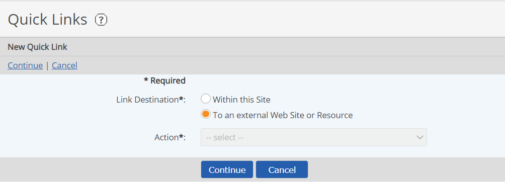
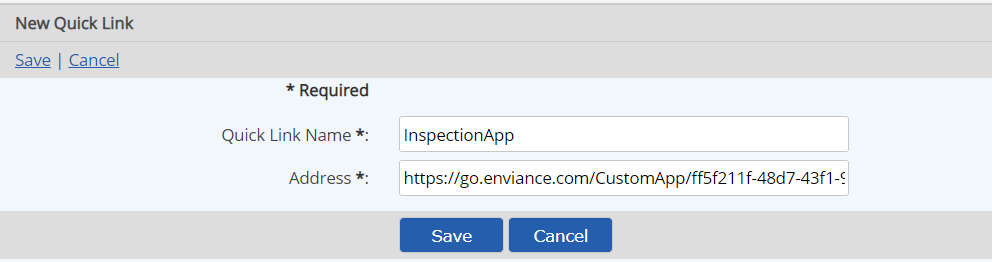

Open the InspectionApp in a new browser window by select the pop-out button  for the App from the menu.
for the App from the menu.


For more info, see Quick Links Panel Configuration.
You can set up a link to the InspectionApp on a Quick Links panel in the Portal to allow users to easily navigate to the InspectionApp in either online or offline mode.
To set up a Quick Link from the Portal to the InspectionApp:
Open the InspectionApp in a new browser window by select the pop-out button for the App from the menu.


For more info, see Quick Links Panel Configuration.